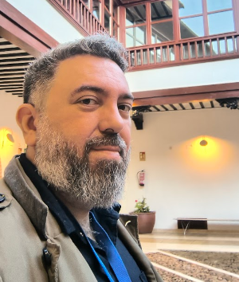
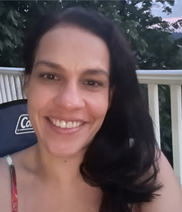
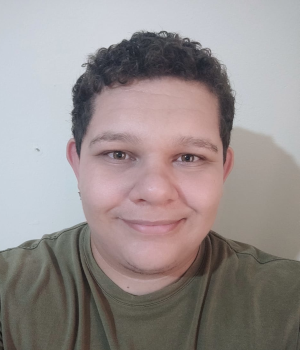

Sobre as/os autoras/es
Volume 2
Aline Paes 📨️

Aline Paes é formada em Ciência da Computação pela UERJ, com mestrado e doutorado em inteligência artificial pela COPPE/Sistemas/UFRJ e estágio sanduíche de doutorado no Imperial College London. É docente na UFF desde 2013. Suas áreas de interesse incluem aprendizado de máquina relacional, aprendizado de representações para linguagem, IA para impacto social positivo e IA explicável. Neste livro, colaborou com os Capítulos Modelos de linguagem e ChatGPT, MariTalk e outros agentes de conversação.
Altigran Soares Silva 📨️

Altigran Soares da Silva concluiu doutorado em Ciência da Computação pela UFMG (2002) e é professor titular do Instituto de Computação da UFAM. Seus interesses incluem: Aprendizagem de Máquina, Modelos de Linguagem, Engenharia de Dados e Recuperação de Informação. Neste livro, colaborou nos capítulos Avaliação de Large Language Models: Fundamentos, Métricas Tradicionais e Desafios Atuais e Fundamentos da Geração Aumentada por Recuperação. Neste livro, colaborou com os Capítulos Avaliação de Grandes Modelos de Linguagem e Geração Aumentada por Recuperação (RAG).
André Carvalho 📨️

André Carvalho é doutor em Informática pela Universidade Federal do Amazonas, onde, desde 2013 é professor associado, sendo também também é coordenador do bacharelado em Inteligência Artificial. Também é coordenador do projeto de pesquisa IATS - Inteligência Artificial aplicada em Teste de Software, que tem como foco aplicação de técnicas de processamento de linguagem natural em tarefas de qualidade de software. Sua pesquisa tem como foco áreas como Inteligência Artificial, Aprendizagem de Máquina, Recuperação de Informação e Ciência de Dados. Neste livro, colaborou com os Capítulos Avaliação de Grandes Modelos de Linguagem e Geração Aumentada por Recuperação (RAG).
Brielen Madureira 📨️
Brielen Madureira é formada em Matemática Aplicada e Computacional pela Universidade de São Paulo (USP). Tem mestrado em Ciência e Tecnologia da Linguagem pela Universidade de Saarland (Alemanha) e doutorado em Linguística Computacional pela Universidade de Potsdam (Alemanha), onde participou do grupo de pesquisa em Diálogo. Mais amplamente, tem interesse na avaliação de tecnologias de linguagem e nas urgentes considerações éticas que elas demandam. Atualmente é pesquisadora em fase de pós-doutorado na Universidade de Leipzig (Alemanha), no grupo Climate Discourse. Neste livro, colaborou com os Capítulos Avaliação de tecnologias de linguagem, Diálogo e Interatividade e Responsabilidade no desenvolvimento e uso de tecnologias de linguagem baseadas em IA.
Cláudia Freitas 📨️

Cláudia Freitas é formada em Letras pela PUC-Rio, onde concluiu o doutorado em Estudos da Linguagem (2007) sobre a construção de ontologias a partir de corpus. De 2012 a 2022 foi docente do Programa de Pós-Graduação em Estudos da Linguagem da PUC-Rio, onde fundou o grupo ComCorHD (Linguística Computacional, Corpus e Humanidades Digitais). De 2007 a 2022 foi também pesquisadora da Linguateca. Ao longo de 2023 e 2024 foi pesquisadora do ICMC/USP, vinculada ao C4AI, e atualmente é pesquisadora independente. Suas áreas de interesse incluem construção e avaliação de datasets/corpora, semântica/significado, e articulação entre abordagens simbólicas e neurais. Neste livro, colaborou com os Capítulos E o significado?, Conjunto de dados, dataset e corpus, Avaliação conjunta em português e ChatGPT, MariTalk e outros agentes de conversação.
Cristiane Namiuti 📨️

Cristiane Namiuti é Bacharel em Linguística pela UNICAMP (2002) onde também obteve o título de Doutora em Linguística (2008). Fez parte da equipe do Corpus Anotado do Português Histórico Tycho Brahe (1998-2010). Desde 2008, atua como docente da Universidade Estadual do Sudoeste da Bahia (UESB) e no PPGLin/UESB desde sua fundação em 2010. Atualmente, integra o grupo de pesquisadores e co-fundadores dos Laboratórios LAPELINC/UESB e LaViHD/USP e, desde 2020, faz parte de uma das equipes do C4AI - Centro de Inteligência Artificial da USP (LaViHD-C4AI). Suas áreas de interesse incluem metodologias automáticas de anotação e busca de dados em textos escritos, mudança linguística, história do português, linguística de corpus e humanidades digitais. Neste livro, colaborou com o Capítulo O papel dos dados no pré-treinamento de Grandes Modelos de Linguagem.
Daniela Vianna 📨️

Daniela Vianna tem Ph.D. em Ciência da Computação pela Rutgers University, USA, e mestrado e bacharelado em Ciência da Computação pela Universidade Federal Fluminense, Brasil. Em 2022, completou um pós-doutorado na Universidade Federal do Amazonas, Brasil, em uma parceria com a Jusbrasil. Seus interesses estão nas áreas de aprendizado de máquina e PLN. Neste livro, colaborou com o Modelos de linguagem.
Danilo Samuel Jodas 📨️

Danilo Jodas é formado em Ciência da Computação pelo Centro Universitário do Norte Paulista (UNORP), com pós-graduação em processamento de imagens e aprendizado de máquina pela UNESP e FEUP (Universidade do Porto). É pesquisador de pós-doutorado na UNESP de Bauru desde 2019, atuando em pesquisas de aprendizado de máquina e PLN. Neste livro, colaborou com os Capítulos Sumarização Automática e Treinamento de Grandes Modelos de Linguagem na prática.
Douglas Rodrigues 📨️

Douglas Rodrigues é formado em Informática para Gestão de Negócios pela FATEC/Botucatu, Mestrado (UNESP/Bauru) e Doutorado (UFSCar/São Carlos) em Ciências da Computação. Atualmente, atua como pós-doutorando e pesquisador no Recogna/UNESP. Suas áreas de interesse incluem aprendizado de máquina e otimização matemática. Neste livro, colaborou com os Capítulos Sumarização Automática e Treinamento de Grandes Modelos de Linguagem na prática.
Gabriel Lino Garcia 📨️

Gabriel Lino Garcia é graduado em Análise e Desenvolvimento de Sistemas pela FATEC e mestre em Inteligência Artificial (IA) e Processamento de Linguagem Natural (PLN) pela UNESP, onde faz doutorado focado na aplicação de modelos de linguagem na área médica. Seus interesses incluem aprendizado de máquina, grandes modelos de linguagem, aprendizado multimodal e aplicações médicas. Neste livro, colaborou com os Capítulos Sumarização Automática e Treinamento de Grandes Modelos de Linguagem na prática.
Gabriela Alves Lachi 📨️

Gabriela Alves Lachi é graduanda em Letras pela Universidade de São Paulo (USP). Suas áreas de interesse em Processamento de Linguagem Natural envolvem a construção e o desenvolvimento de corpus, bem como o treinamento e a avaliação de grandes modelos de linguagem. Neste livro, colaborou com o Capítulo O papel dos dados no pré-treinamento de Grandes Modelos de Linguagem.
Felipe Ribas Serras 📨️

Felipe Ribas Serras é Bacharel em Física pelo Instituto de Física da Universidade de São Paulo (USP) e Mestre em Ciência da Computação pelo Instituto e Matemática e Estatística da USP. Suas áreas de interesse incluem complexidade de linguagem e abordagens computacionais à variação linguística e tipologia. Neste livro, colaborou com os capítulos Complexidade Textual e suas Tarefas Relacionadas, O papel dos dados no pré-treinamento de Grandes Modelos de Linguagem.
Jessica Rodrigues 📨️
Jessica Rodrigues tem graduação e mestrado em Ciência da Computação, sendo o mestrado focado em machine learning e natural language processing, pela Universidade Federal de São Carlos (UFSCar). A experiência acadêmica continua com o PhD em social data science pela University of Oxford, com foco em AI safety, fairness and biases in language models. Jessica também é Lead Data Scientist e é especialista em AI aplicada. Neste livro, colaborou com os Capítulos Semântica distribucional e Modelos de linguagem.
João Paulo Papa 📨️

João Paulo Papa é formado em Sistemas de Informação pela UNESP, com pós-graduação em processamento de imagens e aprendizado de máquina pela UFSCar e Unicamp, respectivamente. Possui pós-doutorados na Unicamp, Harvard e MIT. É professor titular da Unesp onde atua desde 2009 e suas áreas de interesse incluem visão computacional, processamento de imagens, aprendizado de máquina e aprendizado multimodal. Neste livro, colaborou com os Capítulos Sumarização Automática e Treinamento de Grandes Modelos de Linguagem na prática.
João Renato Ribeiro Manesco 📨️

João Renato Ribeiro Manesco é doutorando em Ciência da Computação pela UNESP, onde também concluiu mestrado e graduação. Durante o mestrado, realizou estágio de pesquisa no Media Integration and Communication Center da Universidade de Florença, Itália. Seus interesses de pesquisa incluem adaptação de domínio, modelos de linguagem generativos e multimodais, e aplicações em contexto médico. Neste livro, colaborou com os Capítulos Sumarização Automática e Treinamento de Grandes Modelos de Linguagem na prática.
João Vitor Mariano Correia 📨️

João Vitor Mariano Correia é bacharel em Ciência da Computação pela UNESP, onde atualmente cursa o mestrado no Programa de Pós-Graduação em Ciência da Computação. Seus principais interesses de pesquisa estão na área de Processamento de Linguagem Natural (PLN), com foco em representações de conhecimento. Neste livro, colaborou com os Capítulos Sumarização Automática e Treinamento de Grandes Modelos de Linguagem na prática.
Lucas Lasota 📨️
Lucas Lasota é mestre e doutor pela Universidade RUDN de Moscou com o doutorado reconhecido pela USP. É pesquisador e docente do Just Transition Center da Universidade de Halle-Wittenberg na Alemanha. É pesquisador associado do Weizenbaum Institute for the Networked Society de Berlin. Advogado inscrito na OAB-SP/432126. Sua pesquisa se concentra em medidas regulatórias de tecnologias digitais e seu impacto sobre direitos individuais e coletivos, bem como governança da internet, telecomunicações e direito contratual internacional. Neste livro, colaborou com o Capítulo Responsabilidade no desenvolvimento e uso de tecnologias de linguagem baseadas em IA.
Marcelo Finger 📨️

Marcelo Finger é professor titular de Ciência da Copmputação no IME-USP, Pesquisador Principal do Centro de Inteligência Artificial USP-IBM-FAPESP C4AI, com interesses em Geração de Recursos de Processamento de Linguagem Natural (PLN), uso de PLN para a área de Saúde, estudo e interpretabilidade de redes neurais. Neste livro, colaborou com os Capítulos Complexidade Textual e suas Tarefas Relacionadas, Classificação de Áudio aplicada à Saúde e O papel dos dados no pré-treinamento de Grandes Modelos de Linguagem.
Mariana Lourenço Sturzeneker 📨️
Mariana Lourenço Sturzeneker é graduada em Letras pela Universidade de São Paulo. Faz parte da equipe de desenvolvimento do Córpus Carolina no C4AI (Center for Artificial Intelligence - IBM/USP) desde 2020. Seu interesse principal é na área de construção de córpus. Neste livro, colaborou com o Capítulo O papel dos dados no pré-treinamento de Grandes Modelos de Linguagem.
Mayara Feliciano Palma 📨️
Mayara Feliciano Palma é Bacharel em Letras (português e espanhol) pela FFLCH-USP (2021). Entre suas áreas de interesse estão a construção de corpora e agentes. Neste livro, colaborou com o Capítulo O papel dos dados no pré-treinamento de Grandes Modelos de Linguagem.
Miguel de Mello Carpi 📨️
Miguel de Mello Carpi é Bacharel em Ciência da Computação pelo Instituto de Matemática e Estatística da Universidade de São Paulo. Suas áreas de interesse incluem inteligência artificial e processamento de linguagem natural. Neste livro, colaborou com o Capítulo O papel dos dados no pré-treinamento de Grandes Modelos de Linguagem.
Pedro Henrique Paiola 📨️

Pedro Henrique Paiola é mestre e doutorando em Ciência da Computação pela UNESP, onde também atua como professor substituto desde 2022. É pesquisador no projeto RADIAR, desenvolvido em parceria com a Petrobras. Suas áreas de interesse incluem sumarização automática, modelos de linguagem e avaliação automática de texto. Neste livro, colaborou com os Capítulos Sumarização Automática e Treinamento de Grandes Modelos de Linguagem na prática.
Vanessa Martins do Monte 📨️

Vanessa Martins do Monte é mestre e doutora em Filologia e Língua Portuguesa pela FFLCH-USP, onde atua como docente desde 2014. Coordena o Projeto M.A.P. – Mulheres na América Portuguesa e integra o C4AI – Centro de Inteligência Artificial da USP, atuando na constituição de corpora para PLN. Suas pesquisas concentram-se em Filologia e Humanidades Digitais. Neste livro, colaborou com o Capítulo O papel dos dados no pré-treinamento de Grandes Modelos de Linguagem.